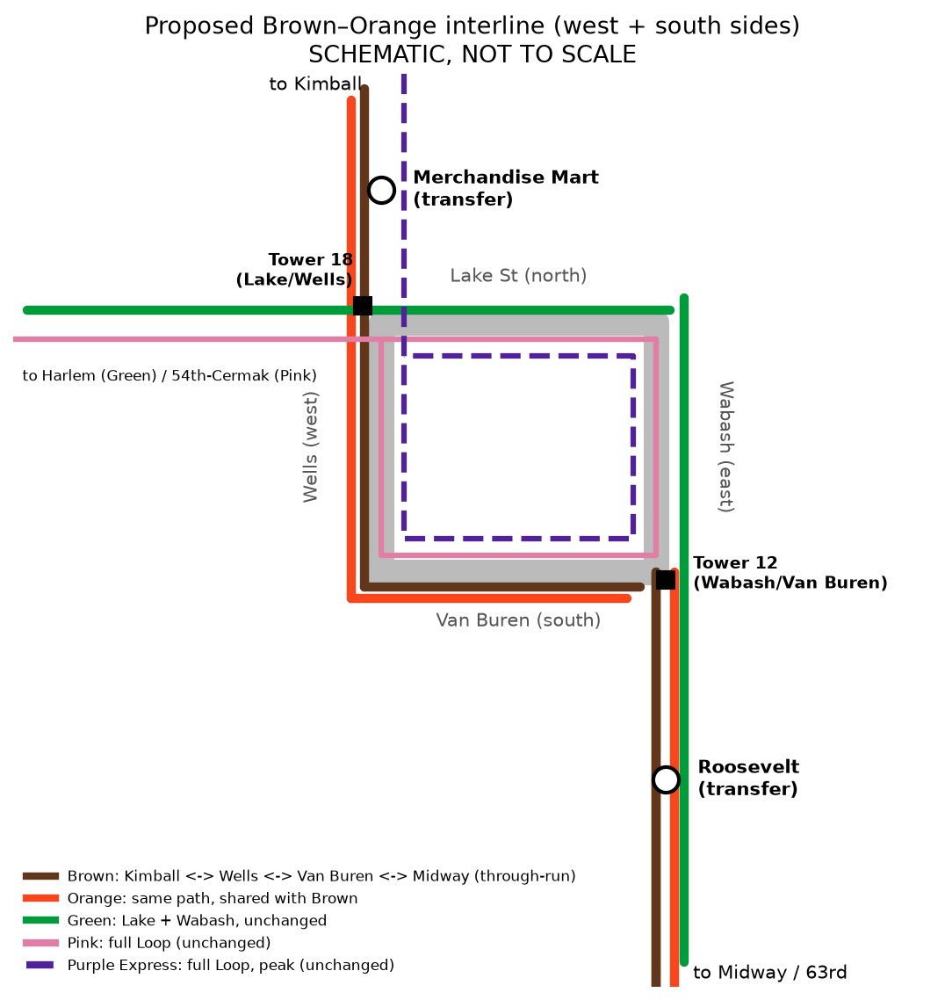

The problem: Tower 18
Tower 18 at Lake and Wells is “the busiest section of track in the entire CTA system,” with “roughly 700 trains” passing through on an average weekday (CTA).
Today Brown Line trains circle the entire Loop counterclockwise and Orange Line trains circle it clockwise (Wikipedia), so trains cross each other's paths at the junctions. CTA's own capacity study says the Inner Loop runs “at or near the capacity limit” and lists “adjusting Loop routing patterns” and “simplifying movements at junctions” as fixes (CTA Rail Capacity Study).
The fix
Through-route Brown and Orange as one line: Kimball → Merchandise Mart → Wells → Van Buren → Roosevelt → Midway, and back the same way. Green stays on Lake and Wabash, unchanged. Pink and Purple Express keep circling the Loop.

Why it matters
A flyover for one junction, or a schedule for this one
CTA built the Belmont flyover (Red-Purple Bypass) to fix one junction conflict, at a reported $320M (NBC Chicago; Streetsblog), part of CTA's $2.1B RPM Phase One (CTA release). Interlining Brown and Orange at Tower 18 is a low-cost, operations-only fix by comparison. By removing crossing moves at the junction, it could free up capacity, which is exactly what a CTA study should measure.
A one-seat ride from the North Side to Midway
North Side Brown Line riders would get a one-seat ride to the Southwest Side and Midway Airport. CTA already runs a version of this: AM-rush “tiger trains” go Midway → Kimball (Streetsblog). It’s also a matter of fairness: CTA is investing $492M in “Your New Blue” on the O’Hare branch (CTA), a worthwhile investment, while North Side riders still can’t reach Midway without a transfer. Midway and the Southwest Side deserve a better connection too, and this one is mostly a scheduling change.
Kimball Yard relief
Kimball Yard is too small. CTA's capacity study says the Brown Line needs “7 Brown Line trains to be stored at Midway Yard” (CTA Rail Capacity Study). Through-running makes sharing Midway Yard the normal way of doing things.
Green Line service is unchanged
Green keeps its current route on Lake and Wabash.
What we're asking
CTA and NITA: study it.
Publicly study a west and south Brown–Orange interline, including a pilot option, and publish the Tower 18 and Tower 12 capacity results.
FAQ
Will I lose my ride to the east side of the Loop?
Riders headed for Washington/Wabash, State/Lake, or Adams/Wabash would transfer at Roosevelt, Merchandise Mart, or Clark/Lake. That's a real tradeoff, so we're asking for a pilot and timed transfers.
Why the west and south sides?
Running Brown and Orange along Wells and Van Buren connects Kimball and Midway directly and removes the left turn Brown makes at Tower 18 and the full-Loop circuit for both lines, while Green stays on Lake and Wabash.
Is it free?
No. Signage, schedules, operator training, and yard changes all cost something, and any signal changes at Tower 18 or Tower 12 are unknown. But it needs no new track, which is why we call it low-cost and operations-only.
Does it add capacity?
It could free up capacity. The gain has not been quantified publicly, and that's why we want a study.
Add your name
If you ride Brown, Orange, or any line through the Loop, add your name to show CTA and NITA that riders want this studied.
We use your info only for this campaign, never sell it, and delete it on request.